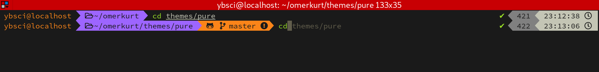
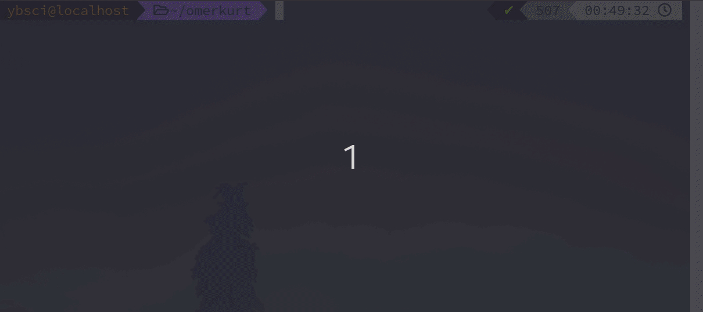

Neden ZSH
kullanıyorum?
Paz 19-04-2020
GNU/Linux işletim sistemi kullandıysanız Bash'in ne demek olduğunu aslında biliyorsunuz. Bash kabuğu GNU/Linux işletim sisteminde ve MacOS'te varsayılan olarak gelmekte. Bash'in açılımı ise "Bourne Again Shell"dir. En popüler kabuk yada komut dili yorumlayıcıları şunlardır:
- Bash
- Tcsh/Csh
- Ksh
- Zsh
- Fish
Benim favori kabuğumsa Zsh. Hatta bilgisayarıma format attığım zaman ilk kurduğum şeylerden biri kendisi. Oh My Zsh topluluğu harikalar yaratmış diyebilirim eklentileriyle, sadece eklenti değil temalarıyla da özelleştirebilirsiniz.
Oh My Zsh indirmek için aşağıdaki komutu çalıştırabilirsiniz.
$ sh -c "$(curl -fsSL https://raw.github.com/ohmyzsh/ohmyzsh/master/tools/install.sh)"
Z Shell yada Zsh kabuğunu işlevsel kılan Oh My Zsh frameworkü, terminal kullanırken baya rahat gezinmemi sağlıyor. En çok kullandığım eklentilerini sırasıyla açıklayacağım.
zsh-autosuggestions
En sevdiğim eklentilerden biri olan "zsh-autosuggestions" komut geçmişinize göre önerilerde bulunuyor. Birçok özelleştirmeye de imkan tanıyor. 
zsh-syntax-highlighting
Bir diğer eklenti ise "syntax-highlighting". Komut satırına yazdığınız komutları renklendirmeye ve vurgulamaya yarıyor.
autojump
Komut satırından başka bir klasöre geçişi kolaylaştırmaya yarayan bir eklenti. Dizinlere atlamak için sadece bir kez ziyaret etmeniz yeterli.
sudo
Kabuktan bir paket indirdiğimizde bazen sudo yazmayı unutuyoruz. Bu eklentiyi tam 108 bin kişi starlamış. Sadece iki kez esc tuşuna basarak komut satırının başına `sudo` eklenecektir, bu kadar kolay.
extract
Bir sürü sıkıştırılmış arşiv türü var. Bunların hepsini dışarıyı çıkartırken farklı komutlar kullanmamız gerekiyor. "Extract" eklentisiyle, arşiv türlerinin komutlarını bilmeniz gerekmiyor. Tek bir komutla arşivinizi dışarı çıkartabileceksiniz. Toplam 35 arşiv formatını destekliyor.
Daha fazla eklenti için şu linke bakmanızı öneririm. Temalara gelecek olursak ben "Powerlevel9k" temasını kullanıyorum. Bu temayı Oh My Zsh'a yüklemek için:
$ git clone https://github.com/bhilburn/powerlevel9k.git ~/.oh-my-zsh/custom/themes/powerlevel9k
Ardından ~/.zshrc belgesine girip temanın adını yazmanız gerekiyor:
ZSH_THEME="powerlevel9k/powerlevel9k"
